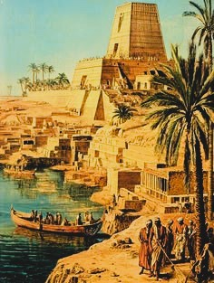
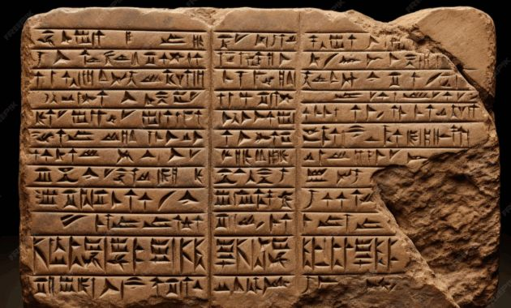
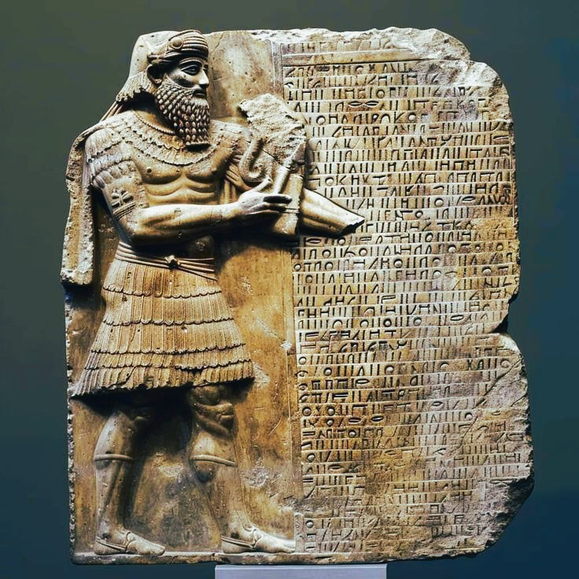
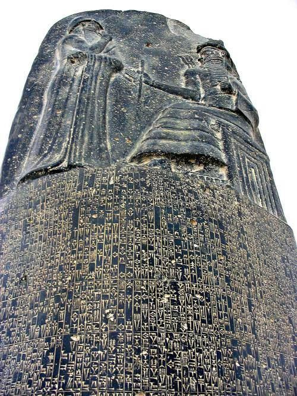
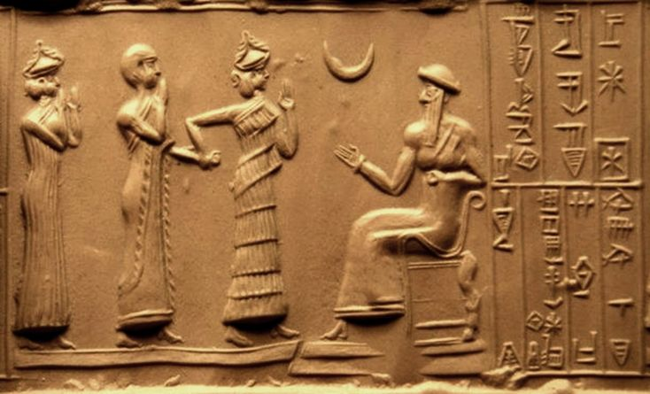
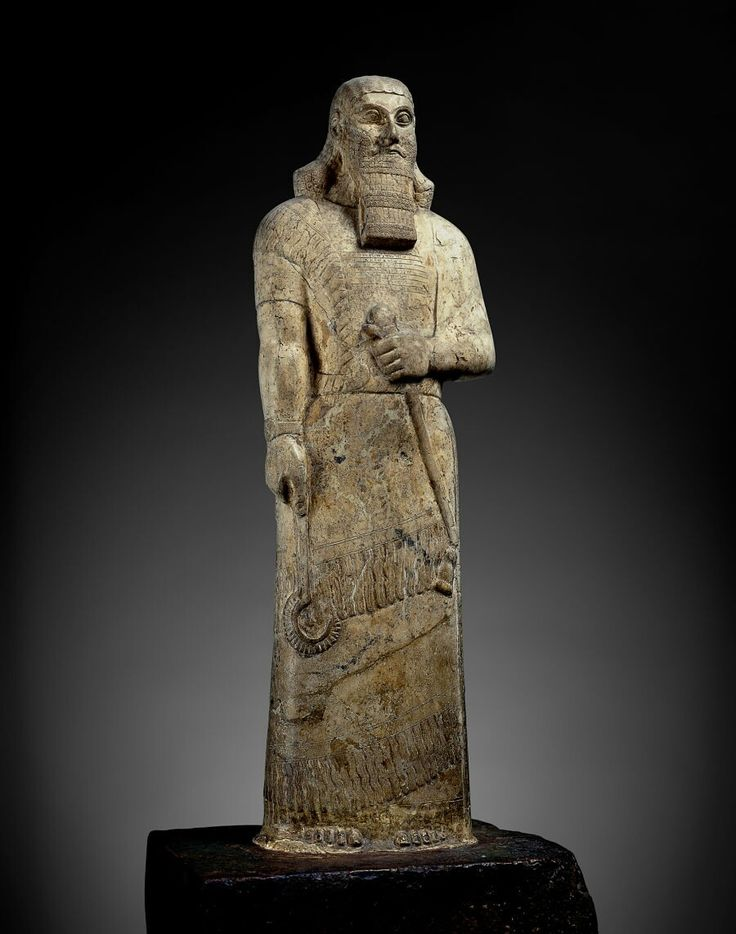
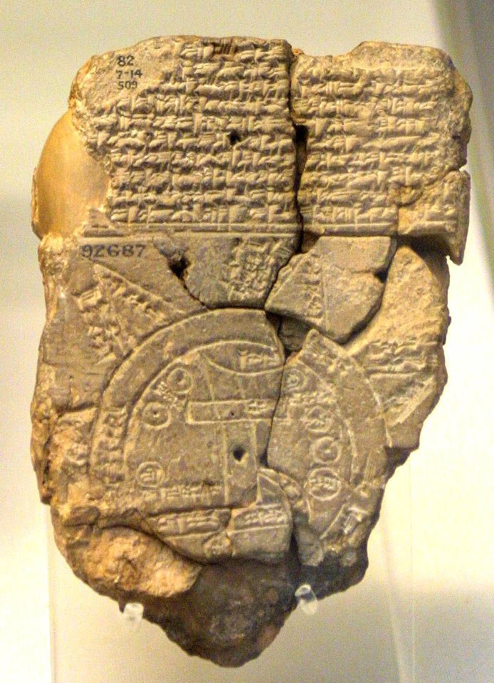

How the civilizations between the Tigris and Euphrates reflected on
justice, mortality, suffering, wisdom, the gods, and the uncertain
conditions of human existence — producing some of humanity's earliest
surviving traditions of philosophical reflection.
Introduction
Ancient Mesopotamian philosophy did not exist as a separate academic
discipline in the modern sense. The peoples of Sumer, Akkad, Babylon,
and Assyria expressed profound reflection through myths, hymns, legal
traditions, proverbs, instructions, dialogues, debates, and epic poetry.
Their writings repeatedly confronted questions that remain central to
philosophy: Why do good people suffer? Can human beings understand the
will of the gods? What is justice? Is wisdom reliable? And how should a
person live when death cannot be escaped?
This intellectual tradition developed over an extraordinarily long
period. Mesopotamian civilizations rose, declined, and were transformed,
while scribes continued to copy, reinterpret, and preserve literary
works from earlier centuries. Ideas therefore moved across languages and
political boundaries, especially between Sumerian and Akkadian
traditions. Rather than representing a single unified philosophy,
Mesopotamian thought contains many different and sometimes conflicting
attempts to understand the world, human responsibility, divine power,
and the uncertainty of existence.
One of the distinctive features of Mesopotamian thought is its awareness
of human limitation. The natural world could sustain life while also
bringing disaster; political power could disappear suddenly; illness,
war, and death could strike even those who appeared to act properly.
Intellectual life therefore developed not only around confidence in
order and knowledge but also around doubt. Human beings searched for
patterns in the world while recognizing that the future and the
intentions of the gods could never be completely transparent.
This page traces that intellectual world through three broad chapters:
the emergence of wisdom and order in the earliest Mesopotamian
civilizations; the development of literary dialogues and debates that
examined suffering, uncertainty, and the limits of human knowledge; and
the great existential questions explored in the
Epic of Gilgamesh, especially humanity's confrontation with
mortality. Together, these traditions reveal an ancient philosophical
world shaped by the uncertainty of life and a persistent search for
wisdom within it.
The chapters that follow should therefore not be understood as claiming
that Mesopotamian thinkers practiced philosophy in exactly the same way
as Plato, Aristotle, or modern university philosophers. Their
intellectual questions were expressed through literary and religious
forms of their own. Yet the differences in form should not prevent us
from recognizing the depth of their reflections on justice, knowledge,
suffering, death, and the meaning of human life.
Timeline at a Glance
c. 3500 BCE
The first major cities emerge in southern Mesopotamia, creating new
centers of writing, administration, religion, and learning
c. 2600 BCE
Early Sumerian wisdom traditions and collections of proverbs begin
to appear in the surviving literary record
c. 2100 BCE
Sumerian literary traditions associated with Gilgamesh circulate in
written form
c. 1800 BCE
Babylonian intellectual traditions develop major works of law,
literature, theology, and wisdom
c. 1000 BCE
Dialogues and wisdom literature explore pessimism, suffering, and
the uncertainty of human action
7th century BCE
The Library of Ashurbanipal preserves major Mesopotamian literary
and scholarly texts, including versions of the Epic of Gilgamesh
🏺 The World Between Two Rivers

Mesopotamia — the land between the Tigris and Euphrates — became home
to some of the world's earliest cities, writing systems, and literary
traditions.
Mesopotamia, a name derived from Greek words meaning the land "between
rivers," occupied much of the region between the Tigris and Euphrates,
principally in modern Iraq and neighboring areas. Over thousands of
years, the region was home to Sumerian, Akkadian, Babylonian, and
Assyrian civilizations. Their cities developed writing, complex systems
of administration, law, mathematics, astronomy, and literature, creating
one of the earliest and most important intellectual landscapes in human
history.
These civilizations should not be treated as a single unchanging
culture. Different languages, kingdoms, cities, and political traditions
developed across Mesopotamia over several millennia. Sumerian was the
language of some of the earliest surviving written literature, while
Akkadian later became central to Babylonian and Assyrian intellectual
life. Earlier texts continued to be copied and studied, however,
creating a remarkable continuity in which later scholars could preserve
and reinterpret ideas inherited from much older civilizations.
The development of cuneiform writing made this long intellectual memory
possible. Clay tablets could preserve administrative records, legal
documents, mathematical calculations, astronomical observations, lexical
lists, myths, hymns, proverbs, and literary compositions. Writing did
more than record information: it created the possibility of comparing
knowledge across generations. Scribes became essential participants in
this intellectual world, preserving traditions while also organizing,
interpreting, and transmitting increasingly large bodies of knowledge.
Life in Mesopotamia was shaped by both extraordinary human achievement
and profound uncertainty. Rivers that supported agriculture could also
flood destructively; independent cities and kingdoms repeatedly fought
one another; and political power could rise and collapse with remarkable
speed. Mesopotamian literature therefore often presents human beings as
living in a world whose ultimate forces cannot be completely controlled.
The gods were powerful, but their purposes were not always transparent
to human beings.
This uncertainty encouraged sustained attempts to discover order within
the world. Mesopotamian scholars carefully observed celestial movements,
natural events, dreams, bodily signs, and other phenomena that might
reveal meaningful patterns. Mathematics and astronomy demonstrated the
remarkable human ability to identify regularities, while divinatory
traditions reflected the desire to understand events whose causes or
consequences remained uncertain. The search for knowledge was therefore
closely connected with a practical need to live within an unpredictable
world.
Yet Mesopotamian texts repeatedly question the limits of this search.
Human beings could accumulate learning, follow traditional wisdom, and
perform the proper rituals, but misfortune could still occur. A person
might act carefully without achieving success, while another might
prosper despite questionable conduct. Such experiences created tension
between the belief that reality possessed an intelligible order and the
recognition that this order was often inaccessible from a human point of
view.
It was within this environment that Mesopotamian thinkers developed
traditions of wisdom. These did not usually take the form of systematic
philosophical treatises. Instead, philosophical problems appeared within
conversations, stories, proverbs, instructions, legal reasoning, and
literary debates. Modern scholars continue to debate how the word
"philosophy" should be applied to these materials, but works such as the
Dialogue of Pessimism, the Babylonian Theodicy, and
the Epic of Gilgamesh clearly confront enduring questions about
knowledge, meaning, justice, and mortality.
Mesopotamian thought is therefore especially important for understanding
the diversity of humanity's earliest intellectual traditions. It shows
that philosophical reflection need not begin with a formal definition of
philosophy or with a single specialized method. Questions about how to
know, how to live, why people suffer, and what death means can emerge
through poetry, narrative, dialogue, and practical instruction. The
history of Mesopotamian thought begins with this broad and deeply human
search for orientation in a world that was both ordered and uncertain.
1️⃣ Wisdom, Order, and Human Knowledge
The Search for Wisdom

Cuneiform tablets preserved proverbs, instructions, debates, myths,
calculations, and literary works across Mesopotamian civilization.
Mesopotamian wisdom literature developed over many centuries and took
many forms. Proverbs offered compressed observations about human
behavior; instructional texts provided advice about conduct and social
life; and literary compositions explored whether wisdom could genuinely
guide a person through an uncertain world. Modern scholarship commonly
groups proverbs, instructions, dialogues, disputations, and reflections
on suffering under the broad category of Mesopotamian wisdom literature,
although these texts were produced in different historical contexts and
should not automatically be treated as a single unified school of
thought.
The Instructions of Shuruppag, one of the oldest surviving
works associated with this broad tradition, presents practical and
ethical advice concerning speech, property, family, social conduct, and
the dangers of reckless behavior. Its wisdom is expressed not through an
abstract theory of morality but through concrete situations. The reader
is repeatedly encouraged to consider the consequences of actions, the
importance of restraint, and the need to maintain relationships within a
wider social world.
This practical character reveals an important feature of ancient wisdom.
To be wise was not simply to possess information. Wisdom involved
knowing how to act appropriately, when to speak, whom to trust, and how
to avoid actions that could damage oneself or others. Knowledge and
character were therefore closely connected. A person might know many
things and still behave foolishly if they lacked judgment, patience,
self-control, or an understanding of the consequences of human action.
Proverbs were particularly suited to this form of reflection because
they condensed experience into memorable statements. Their brevity gave
them authority, but it also created a philosophical problem. General
sayings can offer useful guidance while still conflicting with one
another in particular situations. A proverb that recommends caution may
be wise in one circumstance, while another that praises decisive action
may appear equally convincing in another. Mesopotamian literature would
eventually explore this tension more directly through dialogues that
questioned whether inherited wisdom could always provide reliable
answers.
Knowledge itself was understood as both valuable and limited. Scribes,
priests, scholars, and diviners developed sophisticated systems for
observing the world, recording information, and interpreting patterns.
Mesopotamian astronomy and mathematics demonstrate careful attention to
regularity and calculation, while scholarly lists and commentaries show
an extraordinary effort to classify and preserve knowledge. Human beings
were not presented simply as passive victims of an unknowable universe;
they were capable of learning from observation, memory, tradition, and
disciplined study.
Divination expressed another dimension of the search for knowledge.
Mesopotamian scholars investigated signs that they believed could
provide information about events beyond immediate human perception. From
a modern scientific perspective, these methods do not operate according
to the standards of empirical science. Historically, however, they
reveal a serious intellectual desire to discover meaningful
relationships within nature and history. The underlying question was
epistemological: if the future is hidden, what evidence, if any, can
allow human beings to gain knowledge about what has not yet happened?
At the same time, these traditions recognized a fundamental limit. Even
the wisest human being could not fully know the intentions of the gods
or control the future. Knowledge could improve judgment, but it could
not eliminate uncertainty. This distinction between wisdom and
omniscience was essential: human beings were expected to seek
understanding while remaining aware that their perspective was
incomplete and vulnerable to error.
This tension between the search for knowledge and the limits of human
understanding became one of the defining themes of Mesopotamian thought.
Wisdom was not simply the possession of facts. It involved judgment,
experience, memory, and an awareness of uncertainty. In this sense,
Mesopotamian intellectual life repeatedly confronted an epistemological
question that remains central to philosophy: what can human beings truly
know, and how should they act when certainty is impossible?
2️⃣ Suffering, Doubt, and the Problem of Justice
Why Do Human Beings Suffer?

Mesopotamian dialogues and wisdom texts explored suffering, justice,
divine uncertainty, and the difficulty of finding reliable answers.
One of the most difficult philosophical problems explored in
Mesopotamian literature is the problem of undeserved suffering. If the
world possesses a moral order, why do apparently good people experience
misfortune? If the gods are powerful and justice matters, why can
illness, loss, humiliation, and disaster strike those who appear to have
acted properly? These questions challenged any simple belief that virtue
would always produce happiness or that wrongdoing would always receive
immediate punishment.
Works such as Ludlul bēl nēmeqi, often translated as the poem
of the righteous sufferer, describe a person whose devotion and proper
conduct do not protect him from disaster. The sufferer experiences a
collapse of health, status, and social security while struggling to
understand what has happened. The work is especially important because
it gives literary expression to the gap between human expectations of
justice and the actual experience of misfortune.
The text does not offer a simple philosophical solution in the modern
sense. Instead, it confronts the painful possibility that human beings
cannot always understand why suffering occurs. A person may search their
own actions for an explanation and still remain uncertain. Divine wisdom
exceeds human understanding, but this answer does not remove the
emotional and intellectual difficulty of suffering. The limits of human
knowledge become part of the problem itself.
The Babylonian Theodicy develops related problems through
dialogue and argument. Its speakers debate the relationship between
justice, suffering, human behavior, and divine power. One side
repeatedly confronts the apparent success of the wicked and the
suffering of those who attempt to live properly, while the other defends
continued piety and emphasizes the limits of human understanding. The
work therefore examines a conflict that later philosophical and
religious traditions would continue to confront: how can a just order be
reconciled with the unequal distribution of suffering?
The use of dialogue is philosophically significant. Instead of
presenting a single unquestioned declaration, the text allows competing
perspectives to confront one another. Arguments can be answered,
challenged, and reformulated. The literary form does not guarantee that
the dialogue ends with a completely satisfying solution, but that is
partly what makes it intellectually important. Some philosophical
problems remain difficult precisely because strong arguments can be
offered from more than one perspective.
Mesopotamian literature also explored doubt about practical
decision-making. The Dialogue of Pessimism presents a master
and servant engaged in a series of exchanges in which the master
proposes different actions and the servant can provide conventional
wisdom supporting the proposal. When the master reverses himself, the
servant is equally capable of producing wisdom that supports the
opposite choice. The repeated reversals create a striking challenge to
the authority of apparently reliable advice.
The work can be interpreted in different ways — as satire, comedy,
pessimistic reflection, social commentary, or a deeper examination of
uncertainty. Its precise meaning remains debated, and it should not be
reduced to a single modern interpretation. Nevertheless, the dialogue
raises a powerful philosophical question: if conventional wisdom can be
used to justify opposite courses of action, how reliable is inherited
wisdom as a guide to life?
This problem reaches beyond the particular decisions described in the
dialogue. Human beings often seek rules that will tell them exactly what
to do, yet real life presents changing circumstances in which no simple
maxim can automatically determine the correct action. Mesopotamian
wisdom therefore points toward a distinction between memorizing advice
and exercising judgment. A person may possess many sayings and still
face a situation in which certainty remains impossible.
Together, these works reveal an intellectual tradition willing to
confront uncertainty without always pretending to eliminate it.
Suffering may not be immediately intelligible, justice may not be
visibly rewarded, and conventional wisdom may fail to provide a decisive
answer. Mesopotamian thought does not simply abandon the search for
meaning in response to these difficulties. Instead, it repeatedly
returns to the question of how human beings should continue living,
thinking, and acting when the deepest structure of their experience
remains partly hidden.
3️⃣ Gilgamesh and the Problem of Mortality
The Search for Immortality
The Epic of Gilgamesh explores friendship, grief, death, and the
ultimately unsuccessful human search for immortality.
The Epic of Gilgamesh is one of the greatest surviving works of
Mesopotamian literature and one of humanity's earliest great
explorations of mortality. The epic developed from older Sumerian
traditions associated with Gilgamesh and was later shaped into Akkadian
versions, demonstrating how Mesopotamian literature could preserve and
transform ideas across centuries. The surviving epic is therefore the
result of a long literary history rather than the creation of a single
moment or civilization.
Gilgamesh begins as a powerful king, but power alone does not provide
wisdom. His encounter with Enkidu transforms him, and their friendship
becomes central to the meaning of the story. Through Enkidu, Gilgamesh
experiences companionship, loyalty, conflict, and shared achievement.
The epic therefore connects the question of human identity with human
relationships: a person does not necessarily discover the meaning of
life through isolation or individual power alone.
The decisive transformation occurs when Enkidu dies. Gilgamesh is forced
to confront a truth that his strength, royal status, and achievements
cannot overcome: he too must eventually die. Grief becomes the beginning
of philosophical reflection. The death of another person makes mortality
concrete in a way that abstract knowledge cannot. Gilgamesh no longer
treats death as something that happens only to others; he recognizes it
as a boundary placed around his own existence.
The epic then becomes a profound inquiry into fear and the human desire
for permanence. Gilgamesh sets out in search of immortality, seeking
knowledge from Utnapishtim, the survivor of a great flood who has
received an existence beyond ordinary human death. His journey takes him
beyond the familiar human world in an attempt to discover whether
mortality itself can be overcome.
Yet Gilgamesh ultimately fails to escape the human condition. Even when
he comes close to obtaining something that might restore youth, the
possibility is lost. The philosophical force of the story lies precisely
in this failure. Human beings may seek permanence, but mortality places
a boundary around every individual life. Knowledge can reveal this
limit, but knowledge does not necessarily give human beings the power to
remove it.
The failure of Gilgamesh's quest changes the nature of the question. At
first, the problem appears to be: "How can I avoid death?" By the end,
the deeper question becomes: "How should I live knowing that I will
die?" This shift remains one of the epic's most enduring philosophical
achievements. The impossibility of immortality does not necessarily mean
that life is meaningless; instead, mortality may make questions about
friendship, responsibility, achievement, memory, and human community
even more important.
The epic also explores the limits of heroic ambition. Gilgamesh
initially seeks extraordinary achievements that will distinguish him
from ordinary human beings. His confrontation with death reveals that
even the greatest ruler remains subject to conditions shared by all
mortals. The story therefore questions the belief that power, fame, or
accomplishment can completely defeat human vulnerability. Great
achievements may endure in memory, but the individual who performs them
remains finite.
Friendship gives the epic another answer to the problem of mortality.
Enkidu's death causes Gilgamesh immense suffering, yet their
relationship also transforms his understanding of himself. Human
connection cannot prevent death, but it can give life depth and
significance. In this sense, the epic refuses to present meaning as
something discovered only through divine revelation or individual
success. Meaning also emerges through shared experience and through the
relationships that shape who a person becomes.
The Epic of Gilgamesh does not provide a modern philosophical
argument in formal language, but it develops its ideas through
narrative, experience, and transformation. Friendship gives Gilgamesh a
deeper understanding of himself; grief forces him to confront mortality;
and his journey reveals the limits of human power. The work ultimately
suggests that meaning may lie not in defeating death but in accepting
the limits of human life and recognizing the value of human
relationships, achievements, and the world one leaves behind.
4️⃣ Law and Justice
Hammurabi and the Problem of Social Order

The laws associated with Hammurabi reveal a long Mesopotamian
tradition linking political authority, justice, written law, and the
maintenance of social order.
Questions about justice occupied an important place in Mesopotamian
political and intellectual life. Long before Hammurabi, rulers presented
themselves as defenders of order, protectors of the vulnerable, and
restorers of social balance. Legal documents, contracts, court records,
and royal inscriptions reveal a complex juridical culture in which
disputes over property, inheritance, debt, labor, marriage, and injury
required rules and procedures through which conflicts could be judged.
Justice was therefore not merely an abstract ideal but a practical
problem of organizing life within increasingly large and complex
societies.
The collection commonly known as the Code of Hammurabi,
produced during the reign of the Babylonian king Hammurabi in the early
second millennium BCE, became the most famous surviving example of this
legal tradition. Its provisions address a wide range of social and
economic situations and show that law was deeply connected with social
status and hierarchy. Modern readers should therefore avoid treating the
collection as an early declaration of equality before the law: penalties
and legal consequences could differ according to the position of the
people involved.
The philosophical importance of Mesopotamian law lies partly in the
questions it raises about justice itself. What makes an action deserving
of punishment? Should punishment be proportional to harm? How can
written rules provide stability in a changing society? Mesopotamian
legal thought did not answer these questions through a single systematic
theory, but its legal traditions repeatedly connected wrongdoing,
responsibility, evidence, judgment, and punishment. In this way,
practical law became one of the earliest major arenas in which human
societies reflected on the relationship between individual action and
collective order.
Hammurabi's legal monument also connected justice with political
legitimacy. The ideal king was presented as a ruler responsible for
establishing justice within the land, while royal authority itself was
understood within a religious universe governed by the gods. This
created a powerful political question: is a ruler legitimate simply
because he possesses power, or because he fulfills obligations toward
those he rules? Mesopotamian traditions strongly associated good
kingship with the maintenance of justice, order, and protection against
abuse, even when actual political life often fell far short of these
ideals.
5️⃣ Knowledge and Divination
Can Human Beings Know the Future?

Mesopotamian scholars carefully observed the heavens and other natural
phenomena in an attempt to identify meaningful patterns and signs.
The desire to understand the future was one of the most persistent
features of Mesopotamian intellectual culture. Human beings lived in a
world where floods, droughts, disease, warfare, and political collapse
could transform life suddenly and without warning. Scholars therefore
collected and organized observations of celestial events, weather,
unusual births, dreams, and the organs of sacrificed animals. These
practices formed part of a larger effort to discover whether apparently
unpredictable events followed intelligible patterns.
Mesopotamian divination was not simply a matter of spontaneous
superstition. Over centuries, scribes compiled extensive collections of
observations and conditional statements, often organized in forms that
linked a particular sign with an expected consequence. Celestial
phenomena became especially important, and the systematic observation of
the heavens contributed to the development of sophisticated astronomical
knowledge. The same intellectual culture could therefore combine
observation, classification, prediction, mathematics, and religious
interpretation without sharply separating them into the modern
categories of science, philosophy, and religion.
At the center of these practices stood an epistemological problem. If
the future is uncertain, what evidence could justify a prediction about
it? Mesopotamian scholars answered differently from modern scientific
thinkers, often understanding signs as messages or indications within a
cosmos governed by divine powers. Nevertheless, their sustained
collection of evidence demonstrates an important intellectual impulse:
knowledge requires attention to patterns rather than reliance on
completely random guesswork.
Divination also revealed the limits of human knowledge. Even when
scholars possessed extensive texts and techniques of interpretation,
certainty remained difficult to achieve. Mesopotamian literature
repeatedly returns to the possibility that the gods may remain beyond
complete human understanding. The search for signs therefore produced a
paradox that continues to interest philosophy: human beings seek
knowledge precisely because they are uncertain, yet the very limits of
their perspective may prevent them from ever achieving complete
certainty.
6️⃣ Creation and Cosmology
The Origins and Structure of Reality
Mesopotamian thinkers also confronted questions about the origins and
structure of the cosmos. Their answers were expressed primarily through
mythological narratives rather than through the abstract metaphysical
vocabulary developed by later Greek philosophers. Yet myths such as the
Babylonian Enūma Eliš ask questions that remain fundamentally
philosophical: How did the ordered world emerge? What existed before the
present cosmos? Why is reality structured as it is, and what powers
maintain that structure?
The Enūma Eliš presents creation as emerging through conflict,
transformation, and the establishment of order. The story describes a
primordial condition associated with powerful divine forces before the
cosmos reaches its organized form. The victory of Marduk becomes central
to the formation of the ordered world and to the establishment of a
hierarchy among the gods. Creation is therefore not presented simply as
the appearance of matter from nothing, but as the transformation of a
dangerous and unstable primordial reality into an intelligible order.
This cosmological imagination reflected the historical environment in
which Mesopotamians lived. Order was never assumed to be permanently
secure. Cities could fall, rivers could destroy fields, and political
stability could collapse. The contrast between order and chaos therefore
appeared not only in stories about the beginning of the universe but
also in everyday reflections on society and human existence. Maintaining
order required continual effort, whether by the gods in the cosmos or by
human beings within their communities.
Mesopotamian cosmology also connected metaphysical questions with
political and religious ones. The organization of the heavens, the
hierarchy of the gods, and the authority of kings could all be
understood as parts of a larger ordered reality. Modern philosophy often
separates metaphysics from politics, but ancient Mesopotamian thought
frequently treated them as interconnected. To ask how the cosmos was
ordered was also to ask what kind of order human society should preserve
and what forces threatened its stability.
7️⃣ Kingship and Political Power
Authority Between Humans and Gods

Mesopotamian kings were commonly represented as rulers whose authority
carried sacred responsibilities toward the gods and their people.
Political power was one of the central realities of Mesopotamian
civilization. From the earliest city-states to the great Babylonian and
Assyrian empires, rulers governed increasingly large populations and
controlled armies, agricultural resources, religious institutions, and
systems of administration. Mesopotamian thought therefore repeatedly
confronted a political problem that remains central today: what makes
the exercise of power legitimate, and what obligations should accompany
authority?
Kingship was commonly understood within a sacred framework. Rulers were
often presented as chosen, favored, or authorized by the gods, although
Mesopotamian traditions were historically diverse and did not always
treat kings as divine beings. The king occupied a position between the
human community and the divine order, carrying responsibilities that
included defense, temple building, administration, the maintenance of
justice, and the preservation of stability. Political authority was
therefore ideally connected not only with command but also with service
to a larger order.
Royal inscriptions frequently celebrated military victories and
construction projects, but they also presented rulers as protectors and
providers. This political language reveals an important distinction
between possessing power and justifying it. A ruler could claim
legitimacy by demonstrating the ability to establish peace, defeat
enemies, protect cities, restore temples, or correct injustice.
Political success was thus often interpreted as evidence that the ruler
had fulfilled a divinely sanctioned role.
At the same time, Mesopotamian history offered abundant evidence that
power could become destructive. Wars, conquest, rebellion, and the
collapse of kingdoms were recurring features of the region's history.
Political thought therefore developed within a constant tension between
the ideal of the just ruler and the realities of imperial domination.
This tension gives Mesopotamian reflections on kingship enduring
philosophical importance: authority may be necessary for order, but
power always raises the question of how those who govern should be
judged.
8️⃣ The Legacy of Mesopotamian Thought
Influence and Intellectual Transmission

Cuneiform tablets preserved Mesopotamian knowledge across centuries
and allowed later generations to inherit, copy, reinterpret, and
expand earlier intellectual traditions.
The intellectual legacy of Mesopotamia depended above all on writing and
transmission. Cuneiform tablets preserved legal documents, mathematical
calculations, astronomical observations, myths, hymns, medical texts,
lexical lists, and literary works across extraordinary spans of time.
Scribes did not simply record information for their own generation: they
copied older compositions, commented upon traditional knowledge, and
transmitted texts through systems of education. Mesopotamian
intellectual history was therefore a continuing conversation between
inherited tradition and new interpretation.
Mesopotamia also influenced neighboring cultures through trade,
migration, diplomacy, conquest, and the movement of scribal traditions.
Cuneiform culture extended beyond the political boundaries of any single
Mesopotamian kingdom, and ideas, literary forms, scientific practices,
and religious concepts circulated across the ancient Near East. Precise
lines of influence are often difficult to establish, and historical
connections should not be reduced to simple stories of one civilization
merely copying another. Nevertheless, Mesopotamia formed one of the
great intellectual centers from which knowledge traveled across the
ancient world.
Its legacy can also be seen in the continuing importance of the
questions Mesopotamian writers asked. The problem of undeserved
suffering remains central to philosophy of religion; the search for
reliable knowledge continues in epistemology; questions about law and
punishment remain fundamental to political philosophy; and Gilgamesh's
confrontation with death continues to speak to existential concerns
about mortality and meaning. The forms of expression may differ
dramatically from modern philosophical argument, but the underlying
human problems remain recognizable.
Modern scholarship has increasingly challenged narrow histories that
treat philosophy as beginning suddenly and exclusively in classical
Greece. This does not require erasing the distinctive achievements of
Greek philosophy or pretending that Mesopotamian texts belong to the
same intellectual genre as Plato or Aristotle. Instead, it requires
recognizing that human reflection on knowledge, justice, power, reality,
suffering, and death developed through multiple civilizations and
literary forms. Mesopotamian thought stands at the beginning of one of
humanity's longest surviving traditions of written intellectual inquiry.
👤 Major Thinkers & Voices
The key figures and intellectual traditions behind Mesopotamian thought,
in brief.
Shuruppag
Ancient Sumerian Tradition
Traditionally associated with one of the oldest surviving works of
wisdom literature, offering practical and ethical instruction.
Enheduanna
c. 23rd century BCE
An Akkadian-era high priestess and author whose surviving hymns make
her one of the earliest named writers in world history.
Gilgamesh
Legendary Ancient King
The central figure of Mesopotamia's great epic and a literary symbol
of humanity's struggle with death and mortality.
Utnapishtim
Epic Tradition
The immortal flood survivor who reveals to Gilgamesh the limits that
separate ordinary human beings from divine immortality.
Babylonian Sages
Across Many Centuries
Scribes and scholars who developed traditions of wisdom, astronomy,
mathematics, divination, debate, and literary interpretation.
Assyrian Scholars
1st Millennium BCE
Learned scribes who preserved and copied major works of Mesopotamian
intellectual and literary tradition.
🧠 The Limits of Knowledge — human beings seek wisdom
and patterns in the world but cannot completely know the future or
divine intentions
⚖ Justice and Suffering — the difficult question of
why apparently good people can experience misfortune and whether the
world possesses a just moral order
💀 Mortality — death as the unavoidable limit of
human existence and the search for meaning within a finite life
📜 Law and Social Order — the attempt to regulate
human conflict through rules, judgment, responsibility, and political
authority
🔮 Knowledge and Divination — the search for
meaningful patterns in nature and the problem of predicting an
uncertain future
🌌 Order and Chaos — the question of how an
intelligible and ordered cosmos emerges from instability and disorder
👑 Kingship and Legitimate Power — the relationship
between political authority, justice, responsibility, and the
maintenance of collective order
🗣 Dialogue and Debate — disagreement and argument
used to examine moral, theological, and existential questions
🌍 Influence on Later Thought
Mesopotamian intellectual traditions shaped the wider ancient Near East
through centuries of cultural exchange, political contact, conquest,
trade, and the transmission of texts. Literary traditions, astronomical
observations, mathematical knowledge, legal practices, myths, and
scribal methods circulated across a world connected with Anatolia, the
Levant, Egypt, Persia, and other neighboring regions. The precise paths
of intellectual influence must be studied carefully rather than reduced
to simple claims of direct borrowing, but Mesopotamia was unquestionably
one of the great centers of ancient learning and written knowledge.
Mesopotamian law and political thought also left an important historical
legacy. The region developed sophisticated traditions of contracts,
courts, legal judgment, royal responsibility, and written collections of
laws. These traditions demonstrate that questions about justice and
political authority were being examined long before the emergence of
later systematic political philosophy. The ideal of the ruler as a
defender of order and justice became part of a much broader ancient
conversation about what responsibilities should accompany power.
Mesopotamian scholarship further demonstrated the importance of
preserving and transmitting knowledge across generations. Scribes copied
ancient literary works, recorded observations of the heavens, organized
lexical and scholarly texts, and maintained traditions that could
survive the rise and fall of individual kingdoms. This long culture of
written transmission allowed later generations to inherit, reinterpret,
and expand earlier knowledge, making Mesopotamia one of humanity's
earliest great centers of sustained intellectual continuity.
Today, Mesopotamian thought is increasingly important to broader
histories of philosophy because it challenges narrow assumptions about
where serious philosophical reflection began. The
Epic of Gilgamesh confronts mortality; wisdom literature
examines ethical conduct; dialogues investigate suffering and
uncertainty; legal traditions address justice and responsibility; and
cosmological narratives explore order and the structure of reality.
These works show that long before philosophy became a formal academic
discipline, human beings were already using writing, dialogue,
narrative, observation, and critical reflection to confront the deepest
problems of existence.
📊 Quick Facts
Time Period: c. 3500 BCE – 539 BCE
Key Region: The Tigris and Euphrates river valleys
and the wider Ancient Near East
Major Civilizations: Sumerian, Akkadian, Babylonian,
and Assyrian
Major Intellectual Forms: Proverbs, wisdom
literature, dialogues, epics, legal traditions, myths, astronomical
records, and scholarly texts
Central Question: How should human beings live in an
uncertain world governed by forces beyond their complete control?
Major Themes: Wisdom, justice, suffering, mortality,
knowledge, law, political authority, cosmic order, and humanity's
place in the universe
Major Legacy: One of humanity's earliest continuous
written traditions of intellectual inquiry, preserved through
cuneiform scholarship and literary transmission
While the civilizations of Mesopotamia developed their traditions of
wisdom, law, myth, and existential reflection between the Tigris and
Euphrates, another great civilization was developing along the Nile.
Ancient Egyptian thinkers explored truth, justice, cosmic order, ethical
character, death, and the possibility of life beyond mortality.